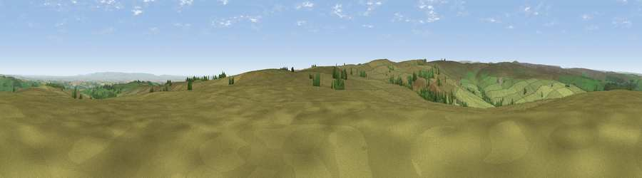

Viewpoint c9527_8322
#10131 in England · top 13% of its area beats it · —The view, rendered

A 360° render of this exact spot computed from the terrain model, tree cover and land cover — summer colours, afternoon light, calibrated against photographs of famous viewpoints. Real trees, hedges and buildings will differ in detail.
The panorama
Grey silhouette: terrain skyline in each direction (720 bearings, Earth curvature and refraction included). Dashed green: skyline with trees (+15 m) and buildings (+8 m) as obstacles. Blue strip: how far the ground is visible on each bearing.
Where the view opens
Wedge length = distance to the farthest visible ground on that bearing (vegetation-aware). Rings at 10, 25 and 50 km.
What fills the view
88% grassland · 6% cropland · 6% woodland
Angular shares of the visible panorama (visual magnitude), not map area. Landscape diversity 0.20 (0–1 Shannon).
Key numbers
More beautiful places nearby
The staircase of upgrades: each row has a higher view potential than everything closer. Driving times are estimates from straight-line distance, calibrated against real road routing — check an actual route before setting out.
| Place | Direction | Drive | Score |
|---|---|---|---|
| Viewpoint near Swinton | NNE · 2 km | ~4 min | 65.2 |
| Viewpoint near Lofthouse | SW · 3 km | ~7 min | 65.8 |
| Viewpoint near Swinton | ENE · 4 km | ~10 min | 68.4 |
| Viewpoint near Grewelthorpe | E · 7 km | ~14 min | 73.9 |
| Viewpoint near East Witton | NNW · 9 km | ~17 min | 77.8 |
| Viewpoint near Kirby Knowle | ENE · 31 km | ~49 min | 80.5 |
| Viewpoint near Thirlby | ENE · 35 km | ~54 min | 81.2 |
| Viewpoint near Thirlby | E · 35 km | ~54 min | 81.5 |
54.18290, -1.75442 · source: screening · position refined by local search. Computed location — check access rights before visiting.